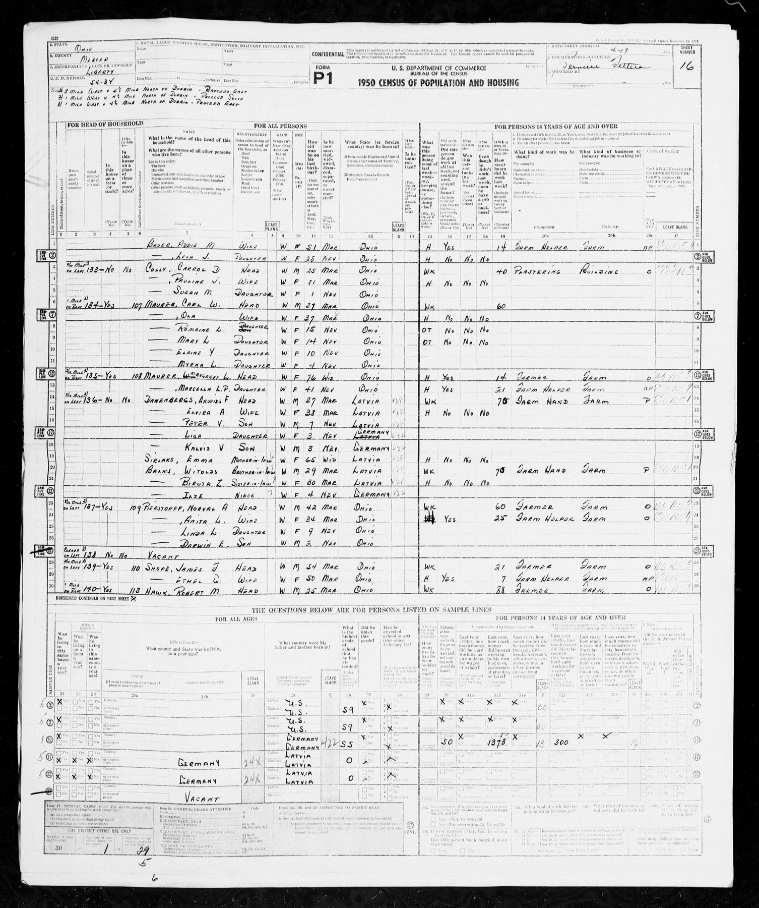
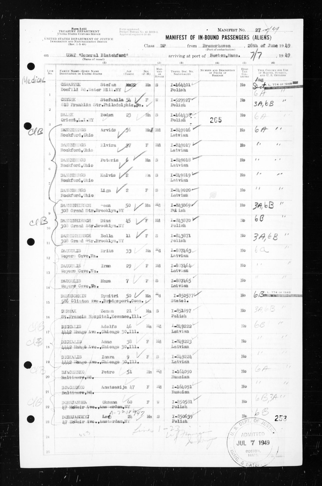

Arvīds Fricis Danenbergs 1913–1996
Peter's grandfather.
Also recorded as Arvids F. Danenbergs; Arvids Danenburgs (1949 manifest); Arvīds Danenbergs.
Arvīds Fricis Danenbergs was born on 17 Jan 1913 in Stūrmuiža, Tukums district, Kurzeme (Courland), Latvia6,7, the son of Alberts Danenbergs and Zelma Forstmane3,31. He married Elvīra Antonija Sirlaka on 25 Jun 1941 in Litene, Vidzeme, Latvia32,33. He left Bremerhaven, Germany on 28 Jun 194923. He arrived at Boston, Massachusetts, United States on 7 Jul 194924,25,26. He died on 19 Feb 1996 in Dowagiac, Cass County, Michigan, United States4,27,28.
Family
- Parents
- Alberts Danenbergs and Zelma Forstmane documented
- Wife
- Elvīra Antonija Sirlaka 1912–2011 · married on 25 Jun 1941 in Litene, Vidzeme, Latvia
- Children
- Peter Valentins Danenbergs b. 1942 tradition
- Kalvis Danenbergs b. 1946 tradition
- Liga Danenberg b. 1946 tradition
Life events
| Event | Date | Place and details |
|---|---|---|
| Born | 17 Jan 1913 | Tukums, Tukums district, Kurzeme (Courland), Latvia Old Style (Julian) date: 4 Jan 19133,4,5 |
| Born | 17 Jan 1913 | Stūrmuiža, Tukums district, Kurzeme (Courland), Latvia Old Style (Julian) date: 4 Jan 1913 Preferred version: His own 1950 declaration of intention (Sturumuiža) and the 1996 Daugavas Vanagu obituary (Tukuma apriņķa Stūrmuižas pagastā) agree. 'Tucum' on the DP card and 'Tukumā' in two obituaries are probably the district; Vecauce/Auce comes from a 1983 note and later obituaries.6,7 |
| Born | 17 Jan 1913 | Auce (Vecauce), Dobele district, Kurzeme (Courland), Latvia6,8 |
| Education | Jul 1931 | Jelgava, Kurzeme (Courland), Latvia Jelgava school-leaving list, 'Arvids Danenbergs no Penkules' (from Penkule parish); see lead arvids-birthplace.19 |
| Education | Sep 1936 | Jelgava, Kurzeme (Courland), Latvia Named in a list of newly admitted students. The 1983 note says he graduated from the 'LU lauksaimniecības fakultāte' (Agricultural Faculty of the University of Latvia, which became the Jelgava Agricultural Academy in 1939).20 |
| Education | 1937 | student, Jelgava agricultural faculty (Daugava survey, summer 1937)21 |
| Lived | 1 Jan 1938 | Stende, Kurzeme (Courland), Latvia3 |
| Lived | bet 1944 and 12 Jan 1945 | Regensburg, Bavaria, Germany10 |
| Lived | bet 1945 and 21 Jun 1949 | Haunstetten DP camp, Augsburg, Augsburg, Bavaria, Germany3,11 |
| Work | 1945 | 'agro-culturel', 'In agricult. station' (DP-2); 'Dipl. Landwirt' (Regensburg list 1947); 'Economist' (IRO nominal roll 1949)3 |
| Note | 8 Dec 1945 | Desired destination: 'If not occupied by the Soviets – to Latvia, otherwise – to Canada.' Languages: Latvian, German. Accompanying family '6+1': wife, son, Emma, Biruta, Vitolds, Mirdza, plus Ilze.3 |
| Work | bet 1949 and 1983 | Ohio, United States From 1949 he worked at a livestock-breeding co-operative in northern Ohio; in 1955 he bought his own farm. Before 1944 he was the Talsi district agronomist. ALA life members nos. 1654 and 1655, 'Arvīds Danenbergs, Decatur, Mich.' and 'Elvira Danenberga, Decatur, Mich.' (1978).8 |
| Left | 28 Jun 1949 | Bremerhaven, Germany23 |
| Arrived | 7 Jul 1949 | Boston, Massachusetts, United States24,25,26 |
| Lived | Apr 1950 | Liberty Township, Mercer County, Ohio, United States12 |
| Note | 14 Aug 1950 | Celina, Mercer County, Ohio, United States NATURALIZATION: declaration of intention (first papers) No. 134, Court of Common Pleas, Mercer County. Physical description: 5 ft 8 in, 175 lb, gray eyes, brown hair, light complexion, scar on right eye. Children named with dates and places (living; see the declaration). The final petition and…30 |
| Lived | bet 1 Aug 1995 and 1 Jan 1998 | Decatur, Michigan, Michigan, United States According to an online family tree13 |
| Cremated | Feb 1996 | 4 |
| Lived | 19 Feb 1996 | Cassopolis, Cass County, Michigan, United States14,15 |
| Died | 19 Feb 1996 | Dowagiac, Cass County, Michigan, United States Preferred version: FamilySearch death record: Dowagiac (the hospital town). Raimonds's MyHeritage tree (2026) gives Cassopolis, his home (the SSDI last residence).4,27,28 |
| Died | 19 Feb 1996 | Cassopolis, Cass County, Michigan, United States According to an online family tree29 |
| Lived | 1 Aug 1997 | Cassopolis, Cass County, Michigan, United States According to an online family tree16,17 |
| Lived | 13 Jul 2001 | Decatur, Michigan, Michigan, United States According to an online family tree18 |
| Origin | Latvia According to the family's 2015 tree9 | |
| Work | Farm worker/farm hand in 1950. 'A dairy farmer for many years'; 'studied agriculture and science' (which fits the Jelgava agricultural academy). Member of the Latvian community at Gaŗezers, Three Rivers, MI.22 |
Records


Open questions
- Alfreds Danenbergs b. 30 Aug 1921 Rīga and his wife Biruta ('Bizuta') née Zīle Ruled out
- Arolsen CM/1 files 855473 and 855706 Open
- Arvīds's birthplace: Tukums / Stūrmuiža / Auce-Vecauce / Penkule Open
- Jaunauce 1913 birth no. 31: Eduards Jūlijs Dannenbergs Possibly
- Arvīds × Elvīra's marriage: 1941 (ours) vs 'between 1953 and 1956' (Raimonds's MyHeritage tree) Confirmed
- Valida Danenbergs (4 camp-list rows, no image online) Open
Sources
- South Bend Tribune obituary, 22 Feb 1996.
Arvids F. Danenbergs Jan. 17, 1913-Feb. 19, 1996
Middle initial "F." in both 1996 obituaries, in the Michigan death index (VZ1W-KBD), in US public records (277V-S1R) and in the 1950 census ("Arwids F"). Not in the tree. The name behind the initial is unknown.
- MyHeritage family tree 'Dzimta' of Peter's third cousin (his family site), member GEDCOM export of 26 Oct 2026, I500142 (person-6500142), GEDCOM lines 9402–9829.
NAME Arvīds /Danenbergs/
[DNA evidence (private)]
- AEF DP Registration Record, Danenbergs Arvids, Reg. No. 902081303 (Team 114 copy; original is ObjId 66841155), DE ITS 3.1.1.1, folder DP0730 (03010101 05 023), DocID 66841157.
1913.17.1. Tucum Kurzeme Latvia | Luther | Alberts Danenbergs | Zelma Forstmanis | Stende Kurzeme Latvia | agro-culturel | In agricult. station | Date: 1945.12.8 | Haunstetten-Augsburg UNRRA TEAM 114
Card dates are year.day.month. [DNA evidence (private)] The Regensburg list (DocID 70184107) also gives 17. 1.13 but has the birthplace 'Sturnonnischa' [?], unidentified.
- Pēc auto sadursmes miris agr. Arvīds Danenbergs, Laiks, Nr.26 (06.04.1996), p. 7.
KALAMAZŪ. (Vm.) - 19. februārī "Lee Memoral" slimnīcā "Dawagiac" [sic], pilsētā Mičiganā, pēc divu automašīnu sadursmes miris agronoms Arvīds Danenbergs. … A. Danenberga līdzbraucēja dzīvesbiedre Elvīra sadursmē guvusi ievainojumus … Arvīds Danenbergs dzimis 1913. gada 17. janvārī Tukumā. Latvijā ieguvis agronoma grādu, bet Vācijā maģistra grādu lauksaimniecībā. … Pēc kremācijas A. Danenbergam veltīts piemiņas brīdis notika 4. martā Garezera "Saulgriežos" … atvadu vārdus teica mirušā sievas māsa Mirdza Gailīte, meitas: Līga Šūbacha (Schubach) un Ilze Bērziņa. … skumst dzīvesbiedre Elvīra (atradās vēl slimnīcā), meitas, dēli ar ģimenēm, brālis Žanis Latvijā
Translation: KALAMAZOO. On 19 February, in Lee Memorial hospital in the city of Dowagiac, Michigan, the agronomist Arvīds Danenbergs died after a collision between two cars. … His wife Elvīra, riding with him, was injured … Arvīds Danenbergs was born 17 January 1913 in Tukums. He earned an agronomist's degree in Latvia and a master's in agriculture in Germany. … After cremation a memorial service for A. Danenbergs was held on 4 March at 'Saulgrieži', Garezers … farewells were spoken by the deceased's wife's sister Mirdza Gailīte and daughters Līga Šūbacha (Schubach) and Ilze Bērziņa. … Mourned by his wife Elvīra (still in hospital), daughters, sons with families, brother Žanis in Latvia
The Laiks and Latvija Amerikā obituaries (1996) say 'dzimis … Tukumā'.
- MyHeritage family tree 'Dzimta' of Peter's third cousin (his family site), member GEDCOM export of 26 Oct 2026, I500142 (person-6500142), GEDCOM lines 9402–9829.
BIRT · 4 JAN 1913
Date: Julian (Old Style), as in the church books: = 17 Jan 1913 (Gregorian), as we have it. [DNA evidence (private)] Jan 1913 | Dzīves vieta: Starp 1. Aug 1995 un 1. Jan 1998 - Decatur, Van Buren, Michigan, United States | Dzīves vieta: 19. Feb 1996 - La Grange, Cass, Michigan, United States | Dzīves vieta: 1. Aug 1997 - Cassopolis, Cass, Michigan, United States | Dzīves vieta: 13. Jūl 2001 - Decatur, Van Buren, Michigan, United States | Miršana: 1996 - Dowagiac, Cass, Michigan, …'. [DNA evidence (private)] Jan | Dzīves vieta: Starp 1995.gada 1. Aug un 1998.gada 1. Jan - Decatur, Van Buren, Michigan, United States | Dzīves vieta: 1996.gada 19. Feb - La Grange, Cass, Michigan, United States | Dzīves vieta: 1997.gada 1. Aug - Cassopolis, Cass, Michigan, United States | Dzīves vieta: 2001.gada 13. Jūl - Decatur, Van Buren, Michigan, United States | Miršana: …'. [DNA evidence (private)] Jan 1913 | Miršana: 19. Feb 1996 | Pēdēja dzīves vieta: Cassopolis, Michigan 49031, USA | SSN izsniegusī pavalsts: Ohio'.
- Declaration of Intention No. 134, Arvids Danenbergs, Mercer County Common Pleas, Celina, Ohio, 14 Aug 1950.
(5) I was born on Jan. 17, 1913 in Sturumuiza Latvia
Gregorian date. The FamilySearch tree (LR39-9HZ) and the SSDI have 4 Jan 1913, which is the same day in the Julian (Old Style) calendar still used in Russian Courland in 1913 (a 13-day difference). The NUMIDENT, the Michigan death index, the declaration of intention and both obituaries all have 17 Jan. "Sturumuiza" is probably a manor/farm (muiža) name. Auce is the nearest town. Both fit Zemgale, where his father taught.
- Zudušie ASV: Miris Arvīds Danenbergs (in 'Ziņas un chronika'), Daugavas Vanagu Mēnešraksts, Nr.2 (01.04.1996), section beginning p. 46.
Arvīds Fricis Danenbergs, dzimis 1913.g. 17. janvārī Tukuma apriņķa Stūrmuižas pagastā. Pēc 2.Jelgavas valsts ģimnāzijas beigšanas studē Lauksaimniecības Akadēmijā Jelgavā, ko beidz ar agronoma grādu. Strādā Talsu agronomiskā birojā. 1941.g. no Sv. Jāņa baznīcas Cēsīs uzsāk kopīgu ģimenes dzīvi ar farmaceiti Elvīru Širlaku. 1944.g. Arvīds ar sievu, 2 gadus vecu dēlu Pēteri un sievas māti Emmu Širlaku dodas bēgļu gaitās uz Vāciju. Tur turpina izglītību Štutgartes—Hohenheimas agrikultūras augstkolā, kur iegūst mākstera grādu agronomijā. 1949.g. izceļo uz ASV. … Miris pēkšņā nāvē auto katastrofā 1996. g. 19. februārī, atstājot sievu Elvīru, trīs bērnus — Pēteri, Kalvi, Līgu, 3 mazbērnus ASV, brāli Žani un vairākus radus Latvijā. Pārpelnots un pelnu urna nosūtīta uz Latviju.
Translation: Arvīds Fricis Danenbergs, born 17 January 1913 in Stūrmuiža parish, Tukums district. After finishing the 2nd Jelgava State Gymnasium he studied at the Agricultural Academy in Jelgava, graduating as an agronomist. He worked at the Talsi agronomy bureau. In 1941, from St John's church in Cēsis, he began family life with the pharmacist Elvīra Širlaka [sic]. In 1944 Arvīds, his wife, their two-year-old son Pēteris and his wife's mother Emma Širlaka fled as refugees to Germany. There he continued his studies at the Stuttgart-Hohenheim agricultural college, earning a master's degree in agronomy. In 1949 he emigrated to the USA. … Died suddenly in a car accident on 19 February 1996, survived by his wife Elvīra, three children (Pēteris, Kalvis, Līga), 3 grandchildren in the USA, his brother Žanis and several relatives in Latvia. Cremated; the urn was sent to Latvia.
17 January is the New Style date; 4 January 1913 (Old Style) = 17 January 1913 (New Style), which reconciles the FamilySearch date 1913-01-04. Middle name Fricis. The 1983 jubilee note instead says "Vecauces pag." (Vecauce parish, Jelgava district), and the Laiks and Latvija Amerikā obituaries say "Tukumā", so the place is uncertain between Stūrmuiža (Tukums district) and Vecauce.
- Mūsu jubilāri, Daugavas Vanagu Mēnešraksts, Nr.2 (01.03.1983), pp. 72–76.
Arvīds Danenbergs, DV ap-bas Latvijas ciemā pie Garezerā valdes loc, 17. janv. atskatījās uz 70 mūža gadiem. Dzimis 1913. g. Vecauces pag. Beidzis LU lauksaimniecības fakultāti un strādāja par Talsu raj. agronomu. Ieradies ASV, 1949. g. viņš strādāja Ziemeļohaio lopu audzēšanas kooperatīvā, bet 1955. g. nopirka savu lauksaimniecību, ko turpina apsaimniekot.
Translation: Arvīds Danenbergs, board member of the DV branch in the Latvian village at Garezers, turned 70 on 17 January. Born 1913 in Vecauce parish. Graduated from the agricultural faculty of the University of Latvia and worked as the Talsi district agronomist. Arriving in the USA in 1949, he worked at a northern Ohio livestock-breeding co-operative, and in 1955 bought his own farm, which he still runs.
1983 jubilee note: born in Vecauces pagasts.
- Peter's tree, danenberg.sql, 2007–2015, personae 5, provenance.
- Kategorie III list of foreigners no longer resident, Landkreis Regensburg, Blatt 1, 29 May 1947, DE ITS 2.1.1.1 BY 125 LET 7 ZM, DocID 70184107.
Danenbergs Arvids 17. 1.13 Sturnonnischa [?] m Dipl. Landwirt 12. 1.45 / Danenbergs Elvira 9. 1.12 Riga w Ehefrau 12. 1.45 / Danenbergs Peter … Schwanenberg m — 12. 1.45 / Sirlaks geb. Sumkulis Emma 6. 6.85 Branti [?] w Landarbeiterin 12. 1.45
Listed with Elvīra, Pēteris and Emma among foreigners present in the district during the war but no longer resident. The 'date of sojourn' 12.1.45 is the same for all four. Emma was a farm labourer ('Landarbeiterin').
- My Life and Times (1912–1949), ¶42.
We lived in Haunstetten for four years (1945-1949).
- Household of Arwids F Danenbergs, Liberty Township, Mercer, Ohio.
136 No No Danenbergs, Arwids F Head W M 37 Mar Latvia … WK … 70 Farm Hand Farm P
1950 census, ED 54-34, sheet 16, lines 14-22, dwelling 136, enumerator Bernice Fetters. Head, 37, farm hand, born Latvia. Household: Elvira A (wife, 38), Peter V (son, 7, b. Latvia), Liga (daughter, 3, b. Germany), Kalvis V (son, 3, b. Germany), Emma Sirlaks (mother-in-law, 65, widowed, b. Latvia), Witolds Balks (brother-in-law, 29, farm hand), Biruta Z Balks (sister-in-law, 30), Ilze Balks (niece, 4, b. Germany). Line 30 on the same sheet, the next dwelling but three, is HAWK, Robert M., 25, farmer: very likely the "Hawk farm" sponsor in the memoir. So the first US home was in Mercer County (Rockford/Celina), not Seneca County (Tiffin). Tiffin comes later. In April 1950 Mirdza addressed her mother "c/o E. Sirlaks - D. R. Smalley Farms, Rockford, Ohio" (see the Detroit card below).
- MyHeritage family tree 'Dzimta' of Peter's third cousin (his family site), member GEDCOM export of 26 Oct 2026, I500142 (person-6500142), GEDCOM lines 9402–9829.
RESI · BET 1 AUG 1995 AND 1 JAN 1998 · Decatur, Van Buren, Michigan, United States
[DNA evidence (private)] Jan 1913 | Dzīves vieta: Starp 1. Aug 1995 un 1. Jan 1998 - Decatur, Van Buren, Michigan, United States | Dzīves vieta: 19. Feb 1996 - La Grange, Cass, Michigan, United States | Dzīves vieta: 1. Aug 1997 - Cassopolis, Cass, Michigan, United States | Dzīves vieta: 13. Jūl 2001 - Decatur, Van Buren, Michigan, United States | Miršana: 1996 - Dowagiac, Cass, Michigan, …'. [DNA evidence (private)] Jan | Dzīves vieta: Starp 1995.gada 1. Aug un 1998.gada 1. Jan - Decatur, Van Buren, Michigan, United States | Dzīves vieta: 1996.gada 19. Feb - La Grange, Cass, Michigan, United States | Dzīves vieta: 1997.gada 1. Aug - Cassopolis, Cass, Michigan, United States | Dzīves vieta: 2001.gada 13. Jūl - Decatur, Van Buren, Michigan, United States | Miršana: …'. [DNA evidence (private)] Jan 1913 | Miršana: 19. Feb 1996 | Pēdēja dzīves vieta: Cassopolis, Michigan 49031, USA | SSN izsniegusī pavalsts: Ohio'.
- Arvids Danenbergs.
Arvids Danenbergs of Cassopolis, Cass County, MI was born on January 4, 1913. Arvids Danenbergs died at age 83 years old on February 19, 1996.
The SSDI-derived index gives birth 4 January 1913. [DNA evidence (private)] The Latvian exile press uses 17 January (New Style). Death 19 Feb 1996.
- MyHeritage family tree 'Dzimta' of Peter's third cousin (his family site), member GEDCOM export of 26 Oct 2026, I500142 (person-6500142), GEDCOM lines 9402–9829.
RESI · 19 FEB 1996 · La Grange, Cass, Michigan, United States · AGE 83
[DNA evidence (private)] Jan 1913 | Dzīves vieta: Starp 1. Aug 1995 un 1. Jan 1998 - Decatur, Van Buren, Michigan, United States | Dzīves vieta: 19. Feb 1996 - La Grange, Cass, Michigan, United States | Dzīves vieta: 1. Aug 1997 - Cassopolis, Cass, Michigan, United States | Dzīves vieta: 13. Jūl 2001 - Decatur, Van Buren, Michigan, United States | Miršana: 1996 - Dowagiac, Cass, Michigan, …'. [DNA evidence (private)] Jan | Dzīves vieta: Starp 1995.gada 1. Aug un 1998.gada 1. Jan - Decatur, Van Buren, Michigan, United States | Dzīves vieta: 1996.gada 19. Feb - La Grange, Cass, Michigan, United States | Dzīves vieta: 1997.gada 1. Aug - Cassopolis, Cass, Michigan, United States | Dzīves vieta: 2001.gada 13. Jūl - Decatur, Van Buren, Michigan, United States | Miršana: …'. [DNA evidence (private)] Jan 1913 | Miršana: 19. Feb 1996 | Pēdēja dzīves vieta: Cassopolis, Michigan 49031, USA | SSN izsniegusī pavalsts: Ohio'.
- MyHeritage family tree 'Dzimta' of Peter's third cousin (his family site), member GEDCOM export of 26 Oct 2026, I500142 (person-6500142), GEDCOM lines 9402–9829.
RESI · 1 AUG 1997 · Cassopolis, Cass, Michigan, United States · AGE 84
[DNA evidence (private)] Jan 1913 | Dzīves vieta: Starp 1. Aug 1995 un 1. Jan 1998 - Decatur, Van Buren, Michigan, United States | Dzīves vieta: 19. Feb 1996 - La Grange, Cass, Michigan, United States | Dzīves vieta: 1. Aug 1997 - Cassopolis, Cass, Michigan, United States | Dzīves vieta: 13. Jūl 2001 - Decatur, Van Buren, Michigan, United States | Miršana: 1996 - Dowagiac, Cass, Michigan, …'. [DNA evidence (private)] Jan | Dzīves vieta: Starp 1995.gada 1. Aug un 1998.gada 1. Jan - Decatur, Van Buren, Michigan, United States | Dzīves vieta: 1996.gada 19. Feb - La Grange, Cass, Michigan, United States | Dzīves vieta: 1997.gada 1. Aug - Cassopolis, Cass, Michigan, United States | Dzīves vieta: 2001.gada 13. Jūl - Decatur, Van Buren, Michigan, United States | Miršana: …'. [DNA evidence (private)] Jan 1913 | Miršana: 19. Feb 1996 | Pēdēja dzīves vieta: Cassopolis, Michigan 49031, USA | SSN izsniegusī pavalsts: Ohio'.
- MyHeritage family tree 'Dzimta' of Peter's third cousin (his family site), member GEDCOM export of 26 Oct 2026, I500142 (person-6500142), GEDCOM lines 9402–9829.
RESI · 1 AUG 1997 · 56882 Point Rd, Cassopolis, Michigan 49031-9734, USA · AGE 84
[DNA evidence (private)] Jan 1913 | Dzīves vieta: Starp 1. Aug 1995 un 1. Jan 1998 - Decatur, Van Buren, Michigan, United States | Dzīves vieta: 19. Feb 1996 - La Grange, Cass, Michigan, United States | Dzīves vieta: 1. Aug 1997 - Cassopolis, Cass, Michigan, United States | Dzīves vieta: 13. Jūl 2001 - Decatur, Van Buren, Michigan, United States | Miršana: 1996 - Dowagiac, Cass, Michigan, …'. [DNA evidence (private)] Jan | Dzīves vieta: Starp 1995.gada 1. Aug un 1998.gada 1. Jan - Decatur, Van Buren, Michigan, United States | Dzīves vieta: 1996.gada 19. Feb - La Grange, Cass, Michigan, United States | Dzīves vieta: 1997.gada 1. Aug - Cassopolis, Cass, Michigan, United States | Dzīves vieta: 2001.gada 13. Jūl - Decatur, Van Buren, Michigan, United States | Miršana: …'. [DNA evidence (private)] Jan 1913 | Miršana: 19. Feb 1996 | Pēdēja dzīves vieta: Cassopolis, Michigan 49031, USA | SSN izsniegusī pavalsts: Ohio'.
- MyHeritage family tree 'Dzimta' of Peter's third cousin (his family site), member GEDCOM export of 26 Oct 2026, I500142 (person-6500142), GEDCOM lines 9402–9829.
RESI · 13 JUL 2001 · Decatur, Van Buren, Michigan, United States · AGE 88
[DNA evidence (private)] Jan 1913 | Dzīves vieta: Starp 1. Aug 1995 un 1. Jan 1998 - Decatur, Van Buren, Michigan, United States | Dzīves vieta: 19. Feb 1996 - La Grange, Cass, Michigan, United States | Dzīves vieta: 1. Aug 1997 - Cassopolis, Cass, Michigan, United States | Dzīves vieta: 13. Jūl 2001 - Decatur, Van Buren, Michigan, United States | Miršana: 1996 - Dowagiac, Cass, Michigan, …'. [DNA evidence (private)] Jan | Dzīves vieta: Starp 1995.gada 1. Aug un 1998.gada 1. Jan - Decatur, Van Buren, Michigan, United States | Dzīves vieta: 1996.gada 19. Feb - La Grange, Cass, Michigan, United States | Dzīves vieta: 1997.gada 1. Aug - Cassopolis, Cass, Michigan, United States | Dzīves vieta: 2001.gada 13. Jūl - Decatur, Van Buren, Michigan, United States | Miršana: …'. [DNA evidence (private)] Jan 1913 | Miršana: 19. Feb 1996 | Pēdēja dzīves vieta: Cassopolis, Michigan 49031, USA | SSN izsniegusī pavalsts: Ohio'.
- Jelgava un apkārtne., Darbs, 1931-07-02.
Realško[l]as nodaļā. … Arvids Danenbergs no Penkules
Translation: Modern (Realschule) section. … Arvids Danenbergs from Penkule
Jelgava school-leaving list, 'Arvids Danenbergs no Penkules' (from Penkule parish); see lead arvids-birthplace.
- Jaunie studenti, Jaunākās Ziņas, 1936-09-05.
… Monika Ceirāne, Arvīds Danenbergs, Harijs Danfelds, Anna Dardzāne …
Translation: (list of new students)
Named in a list of newly admitted students. The 1983 note says he graduated from the 'LU lauksaimniecības fakultāte' (Agricultural Faculty of the University of Latvia, which became the Jelgava Agricultural Academy in 1939).
- My Life and Times (1912–1949), ¶30–31.
- South Bend Tribune obituary, 22 Feb 1996.
Mr. Danenbergs was a dairy farmer for many years. … He was a member of the Local Latvian Community Garezers, Three Rivers, and studied agriculture and science.
Farm worker/farm hand in 1950. 'A dairy farmer for many years'; 'studied agriculture and science' (which fits the Jelgava agricultural academy). Member of the Latvian community at Gaŗezers, Three Rivers, MI.
- IRO nominal roll, DP emigration to USA, sailing ex Bremerhaven for Boston, Mass., 28 June 1949, USAT General Blatchford, page 41, DE ITS 3.1.3.2, ref. 8302110, file F-6-2421, DocID 81660428 (header page: DocID 81660388).
608 39405 855473 Danenbergs Arvids C Latvian Ev. Md Ma 36 Latvia Economist NLC Rockford, Ohio / 609 … Elvira … Md F 37 Latvia Pharmacist NLC Rockford, Ohio / 610 … Peteris … S Ma 6 Latvian … NLC Rockford, Ohio
USAT General (R. M.) Blatchford, 1,082 DPs. Nominal roll no. 608; European case 39405; CM/1 855473; sponsor agency NLC (National Lutheran Council); destination Rockford, Ohio. The family is nos. 608–612.
- Manifest of In-bound Passengers (Aliens), No. 27, USAT General Blatchford, Bremerhaven 28 June 1949 → Boston 7 July 1949, NAID 76075234, image 80 of 651, object 76075314, file 41253_B124264-01101.jpg, lines 4–8.
DANENBERGS Arvids Rockford, Ohio 36 Ma Md I-849016 Latvian … ADMITTED JUL 7 1949 BOSTON, MASS.
Manifest 27, line 4; travel document I-849016; destination Rockford, Ohio; stamped ADMITTED JUL 7 1949. The family is on lines 4–8.
- Declaration of Intention No. 134, Arvids Danenbergs, Mercer County Common Pleas, Celina, Ohio, 14 Aug 1950.
(9) My last place of foreign residence was Augsburg, Germany (10) I emigrated to the United States from Bremerhaven, Germany (11) My lawful entry for permanent residence in the United States was at Boston, Mass. under the name of Arvids Danenburgs on July 7, 1949 on the Gen. Blatchford … Certification No. A-7218970
Sailed from Bremerhaven on the "Gen. Blatchford" (USAT General R. M. Blatchford, a DP transport) and was admitted under the name "Arvids Danenburgs". Last foreign residence Augsburg, Germany. Elvīra (as Elvira Danenbergs) and her mother Emma Sirlaks list the same ship, date and port. INS certification numbers (that is, the A-file numbers): Arvīds A-7218970, Elvīra A-7218969, Emma A-7219632.
- My Life and Times (1912–1949), ¶42–43.
We applied to go to the US, which we entered in July, 1949. … The ship landed in Boston
- Obituary of Arvids F. Danenbergs (unnamed Cass County paper).
Mr. Arvids F. Danenbergs, 83, 56882 Point Rd., Kelsey Lake, Cassopolis, died Monday, Feb. 19, 1996 at Lee Memorial Hospital in Dowagiac, after injuries received in a two car accident in Penn Township. He was born Jan. 17, 1913 in Auce, Latvia.
Died at 4:43 p.m. of injuries from a two-car accident at Dutch Settlement and Decatur roads, Penn Township. Home: 56882 Point Rd., Kelsey Lake, Cassopolis. Visitation at Connelly Funeral Home, Cassopolis, followed by cremation. Memorial service at the Latvian community, Three Rivers. Memorials to Daugavas Vanagi. The tree has the death place as Cassopolis, which is the residence, not the place of death.
- MyHeritage family tree 'Dzimta' of Peter's third cousin (his family site), member GEDCOM export of 26 Oct 2026, I500142 (person-6500142), GEDCOM lines 9402–9829.
DEAT · 19 FEB 1996 · AGE 83
[DNA evidence (private)] Jan 1913 | Dzīves vieta: Starp 1. Aug 1995 un 1. Jan 1998 - Decatur, Van Buren, Michigan, United States | Dzīves vieta: 19. Feb 1996 - La Grange, Cass, Michigan, United States | Dzīves vieta: 1. Aug 1997 - Cassopolis, Cass, Michigan, United States | Dzīves vieta: 13. Jūl 2001 - Decatur, Van Buren, Michigan, United States | Miršana: 1996 - Dowagiac, Cass, Michigan, …'. [DNA evidence (private)] Jan | Dzīves vieta: Starp 1995.gada 1. Aug un 1998.gada 1. Jan - Decatur, Van Buren, Michigan, United States | Dzīves vieta: 1996.gada 19. Feb - La Grange, Cass, Michigan, United States | Dzīves vieta: 1997.gada 1. Aug - Cassopolis, Cass, Michigan, United States | Dzīves vieta: 2001.gada 13. Jūl - Decatur, Van Buren, Michigan, United States | Miršana: …'. [DNA evidence (private)] Jan 1913 | Miršana: 19. Feb 1996 | Pēdēja dzīves vieta: Cassopolis, Michigan 49031, USA | SSN izsniegusī pavalsts: Ohio'.
- MyHeritage family tree 'Dzimta' of Peter's third cousin (his family site), member GEDCOM export of 26 Oct 2026, I500142 (person-6500142), GEDCOM lines 9402–9829.
DEAT · 19 FEB 1996 · Cassopolis, Cass, Michigan, United States · AGE 83
[DNA evidence (private)] Jan 1913 | Dzīves vieta: Starp 1. Aug 1995 un 1. Jan 1998 - Decatur, Van Buren, Michigan, United States | Dzīves vieta: 19. Feb 1996 - La Grange, Cass, Michigan, United States | Dzīves vieta: 1. Aug 1997 - Cassopolis, Cass, Michigan, United States | Dzīves vieta: 13. Jūl 2001 - Decatur, Van Buren, Michigan, United States | Miršana: 1996 - Dowagiac, Cass, Michigan, …'. [DNA evidence (private)] Jan | Dzīves vieta: Starp 1995.gada 1. Aug un 1998.gada 1. Jan - Decatur, Van Buren, Michigan, United States | Dzīves vieta: 1996.gada 19. Feb - La Grange, Cass, Michigan, United States | Dzīves vieta: 1997.gada 1. Aug - Cassopolis, Cass, Michigan, United States | Dzīves vieta: 2001.gada 13. Jūl - Decatur, Van Buren, Michigan, United States | Miršana: …'. [DNA evidence (private)] Jan 1913 | Miršana: 19. Feb 1996 | Pēdēja dzīves vieta: Cassopolis, Michigan 49031, USA | SSN izsniegusī pavalsts: Ohio'.
- Declaration of Intention No. 134, Arvids Danenbergs, Mercer County Common Pleas, Celina, Ohio, 14 Aug 1950.
Subscribed and sworn to … Celina, Ohio this 14th day of August anno Domini 1950
NATURALIZATION: declaration of intention (first papers) No. 134, Court of Common Pleas, Mercer County. Physical description: 5 ft 8 in, 175 lb, gray eyes, brown hair, light complexion, scar on right eye. Children named with dates and places (living; see the declaration). The final petition and certificate have not been found yet. Elvīra's is No. 133 and Emma's is No. 132, the same day.
- Peter's tree, danenberg.sql, 2007–2015, parentages 30.
2015 row parentages(1, 2, 6) corrected to child 5: Arvīds, not Elvīra, is the child of Alberts and Zelma (his DP card names them).
- Declaration of Intention No. 133, Elvira Danenbergs, Celina, Ohio, 14 Aug 1950.
the name of my wife or husband is Arvids Danenbergs; we were married on June 25, 1941 at Litene, Latvia
Spouse Elvira (Sirlaka). Both spouses' declarations (Nos. 133 and 134) give 25 June 1941 at Litene. The South Bend Tribune obituary says "In 1941, in Cesis, Latvia". This CONFLICTS with the memoir (civil marriage near Litene in 1940, church wedding about Christmas 1940 at St John's, Cēsis). Possible readings: the memoir's year is off by one, or the declarations misremember. Note that 25 June 1941 falls three days after the German invasion, in the last days of Soviet rule in Vidzeme, which would be an odd moment for a wedding. Check the Cēsis St John's marriage register and the Litene/Gulbene civil register on Raduraksti.
- My Life and Times (1912–1949), ¶32–33.
So on one afternoon, I closed the drugstore and we started marching to the county administration building, where the secretary had the authority to perform marriages.